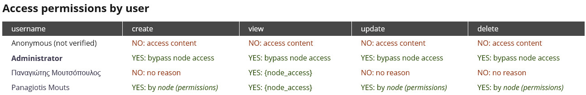

Node Access in module code
Twitter: @pmoutsop
http://drupal.org/u/vensires
Modules we all(?) know about
- Content Access (content_access)
- Node Access (node_access)
- Node access user reference (nodeaccess_userreference)
- Node access node reference (nodeaccess_nodereference)
- @more https://www.drupal.org/node/206766
Hooks
- hook_node_access($node, $op, $account)
- hook_node_grants($account, $op)
- hook_node_access_records($node)
hook_node_access($node, $op, $account)
function meetup_node_access($node, $op, $account) {
if($node->type = 'super_secret_node_type') {
switch($op) {
case 'create':
if(user_access("create {$node->type} content", $account)) {
return NODE_ACCESS_ALLOW;
}
break;
case 'view':
return NODE_ACCESS_DENY;
}
}
// return NODE_ACCESS_IGNORE;
}hook_node_access() #2
function meetup_node_access($node, $op, $account) {
if($node->type = 'super_secret_node_type') {
switch($op) {
case 'create':
if(user_access("create {$node->type} content", $account)
|| in_array($account->uid, array(2, 3))) {
return NODE_ACCESS_ALLOW;
}
break;
case 'view':
return NODE_ACCESS_DENY;
}
}
// return NODE_ACCESS_IGNORE;
}~
Fairytale
~


...and they lived happily ever after
hook_node_grants()
function meetup_node_grants($account, $op) {
$grants = array();
if ($account->uid) {
// Checking authenticated users only.
$grants['meetup_author'] = array($account->uid);
if(in_array($account->uid, array(2, 3))) {
$grants['meetup_secret'] = array(1);
}
}
return $grants;
}hook_node_access_records() #1
function meetup_node_access_records($node) {
$grants = array();
switch($node->type) {
case 'article':
case 'blog':
case 'page':
$grants[] = array(
'realm' => 'meetup_author',
'gid' => $node->uid,
'grant_view' => 1,
'grant_update' => 1,
'grant_delete' => 1,
'priority' => 0,
);
break;
case 'super_secret_node_type':
$grants[] = array(
'realm' => 'meetup_secret',
'gid' => 1,
'grant_view' => 1,
'grant_update' => 1,
'grant_delete' => 1,
'priority' => 0,
);
break;
}
return $grants;
}hook_node_access_records() #2
function meetup_node_access_records($node) {
$grants = array();
switch($node->type) {
// [...]
case 'super_secret_node_type':
$grants[] = array(
'realm' => 'all',
'gid' => 0,
'grant_view' => 0,
'grant_update' => 0,
'grant_delete' => 0,
'priority' => 1,
);
break;
}
return $grants;
}Debugging with Devel Node Access
Combining multiple
access control modules
"Using multiple access control modules together may produce undesirable results since access is granted as soon as only one module grants it. This is a direct consequence of the whitelisting philosophy behind Drupal's grant system. There exists a marked as unsupported module for Drupal 7 (Access Control Bridge) that solves this by requiring all controlling modules to grant access before allowing access."~https://www.drupal.org/node/602730~
Remember
Denying is not recorded to database!
It is implicit!
Problem!
Block Caching No More!
Solution!
Add this to your settings.php
$conf['block_cache_bypass_node_grants'] = TRUE;